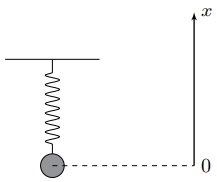
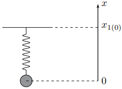
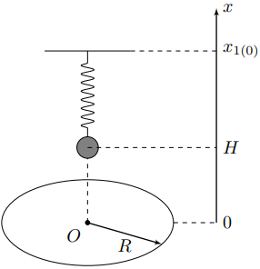
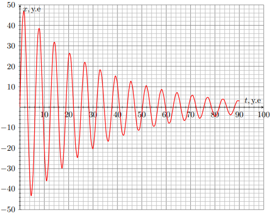
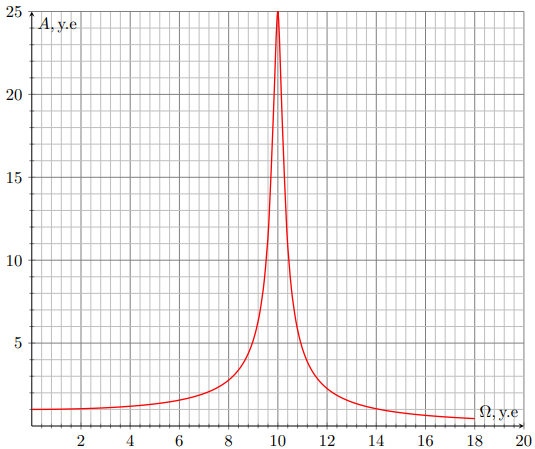
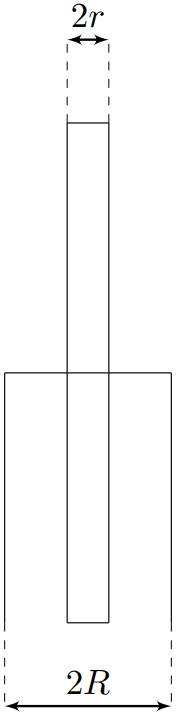
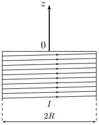

X24 (2024) — English translation
If a conductor is in an alternating magnetic field, or moves in a non-uniform magnetic field, an electric current arises in it. The occurrence of electric current in conductors is a consequence of the phenomenon of electromagnetic induction and has been quite well studied. In particular, the effect of the occurrence of electric current in conductors leads to the effect of so-called “magnetic braking,” which many of you have probably observed live. In this problem, the vibrations of conducting bodies are studied taking into account the influence of the magnetic field. We will study two limiting transitions corresponding to conducting bodies: The resistivity $\rho$ of the conductor is so great that the phenomenon of self-induction can be neglected when determining the Foucault currents arising in the conductor. Parts $A$, $B$ and $C$ of this problem are devoted to this passage to the limit. The resistivity $\rho$ of the conductor is so small that it can be taken equal to zero, and the magnetic field lines can be considered “frozen” into the conducting body. Part $D$ of this problem is devoted to this transition to the limit, in the description of which the effect of freezing of magnetic field lines into a conductor will be described in detail.
If a conductor is in an alternating magnetic field, or moves in a non-uniform magnetic field, an electric current arises in it. The occurrence of electric current in conductors is a consequence of the phenomenon of electromagnetic induction and has been quite well studied. In particular, the effect of the occurrence of electric current in conductors leads to the effect of so-called “magnetic braking,” which many of you have probably observed live.
In this problem, the vibrations of conducting bodies are studied taking into account the influence of the magnetic field. We will study two limit transitions corresponding to conducting bodies:
Let us consider a vertical spring pendulum consisting of a weightless spring with a stiffness coefficient $k$, one end of which is fixed, and a load of mass $m$ is attached to the other end. When moving at a speed $\vec{v}$, it is acted upon by a drag force $\vec{F}_{с}=-\beta\vec{v}$, where $\beta$ is a known constant value. Let us introduce an axis $x$ directed along the spring so that as the coordinate $x$ of the load increases, the length of the spring decreases, and in the equilibrium position the coordinate of the load $x_0=0$. At all points of parts $\mathrm{A}$-$\mathrm{C}$ the ball moves only vertically. We also introduce the following notation: $$\gamma=\cfrac{\beta}{2m}\qquad \omega_0=\sqrt{\cfrac{k}{m}}\quad \gamma<\omega_0{.} $$
Рассмотрим вертикальный пружинный маятник, состоящий из невесомой пружины с коэффициентом жёсткости $k$, один конец которой закреплён, а к другому концу прикреплён груз массой $m$. При движении со скоростью $\vec{v}$ на него действует сила сопротивления $\vec{F}_{с}=-\beta\vec{v}$, где $\ beta$ — известная постоянная величина. Введём ось $x$, направленную вдоль пружины так, что при увеличении координаты $x$ груза длина пружины уменьшается, а в положении равновесия координата груза $x_0=0$. Во всех пунктах частей $\mathrm{A}$-$\mathrm{C}$ шар перемещается только по вертикали. Также введём обозначения: $$\gamma=\cfrac{\beta}{2m}\qquad \omega_0=\sqrt{\cfrac{k}{m}}\quad \gamma<\omega_0{.} $$

Let $E_0$ be the kinetic energy of the load when passing the origin, and $E_1$ be the kinetic energy of the load when it subsequently passes the origin with the same direction of speed. Let us determine the quality factor $Q$ of the oscillatory system as follows: $$Q=\cfrac{2\pi E_0}{E_0-E_1}{.} $$
Consider the spring pendulum from the $\mathrm{A}$ part of the problem. The coordinate $x_1$ of the second end of the spring (to which no weight is attached) changes according to the following law: $$x_1(t)=x_{1(0)}+A_0\sin\Omega t{,} $$где $A_0>0$, а $x_{1(0)}$ соответствует состоянию покоя груза. Далее рассматривайте только установившийся режим движения под действием вынуждающей силы. Используйте введённые ранее величины $\omega_0$ и $\gamma$.
Рассмотрим пружинный маятник из части $\mathrm{A}⟦ M8⟧x_1$ второго конца пружины (к которому не прикреплён груза) изменяется по следующему закону: $$x_1(t)=x_{1(0)}+A_0\sin\Omega t{,} $$где $A_0>0$, а $x_{1(0)}$ соответствует состоянию покоя груза. Далее рассматривайте только установившийся режим движения под действием вынуждающей силы. Используйте введённые ранее величины $\omega_0$ и $\gamma$.

We will call resonant such a cyclic oscillation frequency $\Omega_{рез}$ at which the amplitude of oscillations of the system is maximum and is denoted as $A_{рез}$.
The width of the resonance curve $\Delta{\omega}$ is the difference between the maximum and minimum cyclic frequencies $\Omega_{max}$ and $\Omega_{min}$, respectively, at which the oscillation amplitude is $\sqrt{2}$ times less than the resonant one.
A solid homogeneous ball of mass $m$ and radius $R_0$ is made of a material with high resistivity $\rho$. Its center can move along the axis of rotation of a ring of radius $R$, the plane of which is horizontal. The current in the ring is slowly increased to $I$ and then maintained constant. To determine the position of the center of the ball, we introduce the axis $x$ with its origin in the center of the ring, directed upward. Consider that the dielectric and magnetic permeabilities of the ball $\varepsilon$ and $\mu$ are equal to unity, respectively, and the radius of the ball $R_0$ satisfies the conditions: $$R_0\ll{R{,}x}{.} $$ Из общефизических соображений ясно, что при движении шара со скоростью $\vec{v}$ вдоль оси вращения кольца действующая на него со стороны кольца сила имеет вид: $$\vec{F}=-\beta(x)\vec{v}{,} $$где $\beta(x)$ — коэффициент пропорциональности, зависящий от координаты $x$ of the center of the ball.
Let's start by studying the magnetic field of the ring.
Let us consider an initial ball of radius $R_0$ with resistivity $\rho$, located in a uniform magnetic field $\vec{B}=\vec{e}_xB$. Without changing direction, the magnitude of the magnetic field changes at a speed $dB/dt=\dot{B}$. Let us select a disk in the ball with radius $r_0$ and thickness $h\ll{r_0}$, the bases of which are perpendicular to the axis $x$.
Now consider the motion of the ball along the axis of the ring with speed $v_x$.
Let us use the obtained result for $\beta(x)$ to determine the resistivity of the ball from free vibrations, as well as from the amplitude-frequency characteristic of forced vibrations. The ball was fixed on one of the ends of a weightless non-conducting spring with a stiffness coefficient $k$. The other end of the spring is fixed at the point with coordinate $x_{1(0)}$. In the equilibrium position, the center of the ball is located at a height $H\gg{R_0}$ above the center of the ring. The deviation of the center of the ball $\Delta{x}$ from the equilibrium position always satisfies the condition: $$\Delta{x}\ll{R,H}{.} $$
На первом графике представлена зависимость отклонения шара от положения равновесия при собственных колебаниях в некоторых условных единицах. Второй конец пружины при этом неподвижен. На втором графике представлена зависимость амплитуды вынужденных колебаний $A$ от частоты $\Omega$ в некоторых условных единицах. Координата второго конца пружины начинает изменяется по закону: $$x_1(t)=x_{1(0)}+A_0\sin\Omega t{.} $$
На первом графике представлена зависимость отклонения шара от положения равновесия при собственных колебаниях в некоторых условных единицах. Второй конец пружины при этом неподвижен. На втором графике представлена зависимость амплитуды вынужденных колебаний $A$ от частоты $\Omega$ в некоторых условных единицах. Координата второго конца пружины начинает изменяется по закону: $$x_1(t)=x_{1(0)}+A_0\sin\Omega t{.} $$



This part of the problem is devoted to the study of the magnetic field resulting from the movement of very good conductors in them.
Consider the following design: Coaxially with a semi-infinite circular solenoid of radius $R$ with winding density of turns $n$ and current strength $I$ there is a very long, well-conducting cylinder of mass $m$ with radius $r\ll{R}$, the ends of which are located on opposite sides of the base of the solenoid and are distant from it at a distance many times greater than its radius. In the initial position of the cylinder there are no currents in it. Due to the high conductivity of the substance, the magnetic field induction lines are frozen into it. This means that when a substance moves, the magnetic field lines will move with it. In this case, corresponding to a solid body, this leads to the fact that the magnetic field induction at each point of the cylinder will be maintained as it moves, which is due to the occurrence of circular Foucault currents in the rod.
Consider the following design: Coaxially with a semi-infinite circular solenoid with a radius $R$ with a winding density of turns $n$ and a current strength $I$ there is a very long, well-conducting cylinder of mass $m$ with a radius $r\ll{R}$, the ends of which are located on opposite sides of the base of the solenoid and are distant from it at a distance many times greater than its radius. In the initial position of the cylinder there are no currents in it. Due to the high conductivity of the substance, the magnetic field induction lines are frozen into it. This means that when a substance moves, the magnetic field lines will move with it. In this case, corresponding to a solid body, this leads to the fact that the magnetic field induction at each point of the cylinder will be maintained as it moves, which is due to the occurrence of circular Foucault currents in the rod.

Solve the problem in the following approximations: Currents arising in the cylinder flow only along its surface; Outside the cylinder, the magnetic field induction is equal to the magnetic field induction of the solenoid; The cylinder deviates from its original position by the amount $x\ll{R}$; The interaction of the cylinder with the supply wires can be neglected; For the times considered in this problem, the damping of the currents in the cylinder can be neglected.
Solve the problem in the following approximations:
We will characterize the induction of the magnetic field of the solenoid by the axis $z$, directed outward of the solenoid along its axis. The origin of the $z$ axis coincides with the center of the solenoid base.

Let the cylinder be deflected by an amount $x\ll{R}$ along the axis $z$ from its original position.
Let the cylinder in its initial position be given a speed $v_0$ directed along the axis $z$.
Source: https://pho.rs/p/2912